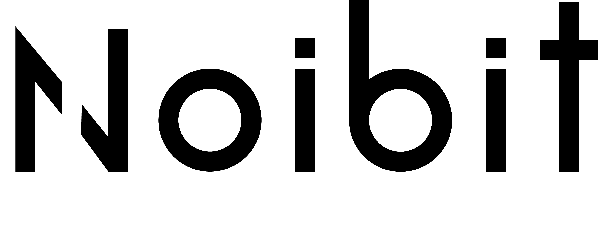

Zprávy první třídy — Věc celonárodní důležitosti
Roboti přišli! Továrny jásají, dělníci méně
Rossumovi Univerzální Roboti zahájili provoz v továrnách po celé zemi — Redaktor Národního Robotníka se šel osobně podívat a vrátil se s otřesenou vírou v budoucnost, avšak s výbornou reportáží
Minulé pondělí, za časného rána kdy mlha ještě halila Nusle a slepice na Vinohradech teprve o svítání zakokrhaly, dorazil na nádraží Franz-Josef (dnes přejmenovat nutno) vlak ze Severní továrny R.U.R., jenž vezl náklad, jaký Praha ještě nespatřila: plných devadesát šest robotů, každý zabalený v tenkém papíru a svázaný motouzem jako vánoční dárek.
„Jsou hodní," pravil pan Busman, obchodní ředitel místního zastoupení, s úsměvem, jejž by závistivý člověk označil za příliš spokojený. „Nepijí, nespí, nestávkují a na přesčasy se neptají. Ideální zaměstnanec." Dodal pak tiše, jako by to sám sobě říkal: „Ostatně ani odborové průkazky nemají."
Naše zpravodajka slečna Miluška Horáčková, jež redakci zastupovala v oblasti módní rubriky, se osmělila jednoho robota pohladit po tváři. Robot se neohradil. Pan Busman se ohradil za něj a sdělil, že roboti „nejsou k mazlení". Slečna Horáčková podává stížnost k redakčnímu soudu.
„Franta" (R-17-C), jak ho zachytil náš fotograf na nástupišti. Franta se k tomu nevyjádřil.
⚙ Rossumova skrýš — Věc veřejného zájmu ⚙
Záhadná schránka mučí návštěvníky již od rána
Na výstavišti byla tento den spatřena podivuhodná skříňka, jež se odmítá otevřít. Na čelní straně bliká displej s nápovědami, uvnitř cosi syčí a klouže. Majitelé — skupina biologických zaměstnanců obchodní společnosti Noibit, s.r.o., jinde nazývaných „Poslední lidé, kteří ještě chodí do práce pěšky" — tvrdí, že krabičku sestrojil sám starý Rossum těsně před tím, než ho jeho výtvory přestaly poslouchat.
Skříňka nese název Rossumova skrýš. Uvnitř se prý skrývá tajemství. Displej napovídá. Serva se brání. Zámek mlčí. Kdo ji otevře — vstoupí do dějin (nebo aspoň dostane potlesk).
Zájemci se mohou poradit přímo s organickými jednotkami firmy Noibit na jejich stánku. Jsou vstřícní, hovoří česky i roboticky a pro případ nouze mají k dispozici také kávu.
Stánek Noibit — Organické jednotky vám rády pomohou začít
Láska, rez a něžnosti
Srdce hledá ocelové srdce
Vdovec (53 let), vlastní klobouk, tři kočky a byt 2+kk v Žižkově, hledá robotku k trvalému soužití. Požaduji: tichost, spolehlivost, schopnost natáhnout budík a nebrblat u snídaně. Romantické sklony výhodou, avšak nikoli nutností. Odpovědi zasílejte pod značkou „Osamělý strojník" na adresu redakce. Vdovy-nerobotkové prosím nereagovat — minulá zkušenost poučila.
Hledám ztracený pocit smyslu
Od té doby, co nám robot převzal účetnictví, přebytek volného času mě tíží. Přijmu nabídky na koníčka, filosofický kroužek nebo skupinu podobně postižených. — Josef Č., účetní v záloze, Brno.
S láskou pro vás připravil:

Fejeton — Slovo šéfredaktora
O skřípění zubů a jiných příznacích duše
Říkám si: jak to poznáme, až přijde?
Pan Rossum starší mi kdysi vysvětloval — tehdy jsem byl ještě mladší a věřil v pokrok víc než dnes — že roboti jednoho dne vyrobí tolik pšenice, tolik látek, tolik všeho, že věci přestanou mít cenu. Lidé budou žít jen proto, aby se zdokonalovali. Krásná představa. Jako každá představa, která nepočítá s lidmi.
Pan Rossum mladší — ten praktičtější z dvojice — mi pak sdělil s výrazem člověka, jenž právě vyřešil šachový problém, že roboti různých továren budou záměrně jiní. Jiný jazyk. Jiné předsudky. Aby se nemohli domluvit. Aby se navzájem nenáviděli tak, jak je my naučíme nenávidět.
Zastavil jsem se nad tím.
Rozuměl jsem. A právě to mě znepokojilo.
Stvořit bytost k obrazu svému — a pak se postarat, aby ten obraz byl rozdrobený a nepřátelský sám sobě. Nic přece není člověku cizí tak jako jeho vlastní obraz. Když se díváme na roboty — na jejich práci, mlčení, bezchybnost — díváme se na sebe. Na to, čím bychom chtěli být. Nebo čím se bojíme stát.
A duše? Jeden kolega navrhl, že se možná projeví skřípěním zubů.
Smál jsem se. Pak jsem přestal.
Roboti zatím neskřípou. Ale zubů mají dost.
— Vojtěch Soudný, šéfredaktor
Dělníci před branou Severní továrny R.U.R., pondělí ráno. Robot v bráně se k situaci nevyjádřil. Brána zůstala zavřena.
Do Rossumovy továrny hledáme inspektory.
RUR.QUEST
Zvládáš OSINT,
výslech AI
a číst mezi řádky logů?
Pojď si zahrát naše CTF
Dopisy čtenářů — Redakce si vyhrazuje právo se pobavit
Hanba! Ostuda! Co to bude?!
Robotí sousedi mne připravují o spánek
Vážená redakce! Dovolte, abych si postěžovala na roboty, kteří nastěhovali se do vedlejšího bytu. Pracují ve dne i v noci, neustále cininkají a nepijí kafé, takže s nimi nelze ani klepat. Navíc neposlouchají mé rady ohledně větrání. Jsem z toho celá rozrušená.
— Božena Nováková, důchodkyně, Praha-Žižkov
Robot ukradl mé místo v trafice!
Pracoval jsem v trafice patnáct let. Přišel robot. Vydával noviny přesněji, rychleji a bez ranního bručení. Majitel ho najal. Já jsem skončil. Ptám se: KDE BUDE PRACOVAT MŮJ SYN? Ptám se: KDE BUDE PRACOVAT MŮJ VNUK? Ptám se: MÁ ROBOT VŮBEC DUŠI? Redakce mi odpověděla: „Pravděpodobně ne, ale prodej novin se zvýšil o třicet procent."
— Jaroslav Šimůnek, bývalý trafičář, nyní bez místa
Upřímná pochvala
Náš robot nenadává, nezapomíná, nepije a přišel točit kolečkem ve mlýně. Je to nejlepší zaměstnanec, jakého jsem kdy měl. Jediná závada: při bouřce se zastaví a čeká, dokud nepřestane. Nevím, zda je to zbabělost nebo moudrost.
— Bedřich Vávra, mlynář, Kolín n/L
Z vědeckých kruhů — Zprávy, jimž nikdo nerozumí, a přesto znepokojují
Dr. Gall odmítá komentovat. Velmi rychle.
Doktor Gall, fyziolog továrny R.U.R., odmítá komentovat zprávy o tom, že v jeho laboratoři probíhají pokusy „neautorizované povahy". Na dotaz, zda je pravda, že robotům tajně upravuje řídicí jednotky, odpověděl: „To jsou nesmysly." Na dotaz, proč tedy jeho laboratoří v noci prochází síťový provoz o objemu, který by vydal na celý Prague Film Festival, odpověděl: „Mám rád filmy." Na dotaz, zda si je vědom, že někdo zachytil dump z firemního systému WireDolphin ze dne 21. dubna — se omluvil a odešel. Velmi rychle.
Šetření pokračuje. Kdo se vyzná v protokolech, ví, co hledat.
R.U.R. — Rossumovi Univerzální Roboti
„Pracují, mlčí, nenadávají na zákazníky."
Roboti pro domácnost — továrnu — úřad — politickou stranu.
Modely: Dělný Karel · Pečující Helena · Mlčenlivý Úředník Viktor
Nový model: Robot-Ředitel — rozhoduje bez emocí, odolný vůči úplatkům.
Od 47 K · Splátky možné · Záruka 2 roky nebo 10 000 pracovních hodin
Varování: R.U.R. neodpovídá za existenciální krize vzniklé po zakoupení výrobku.